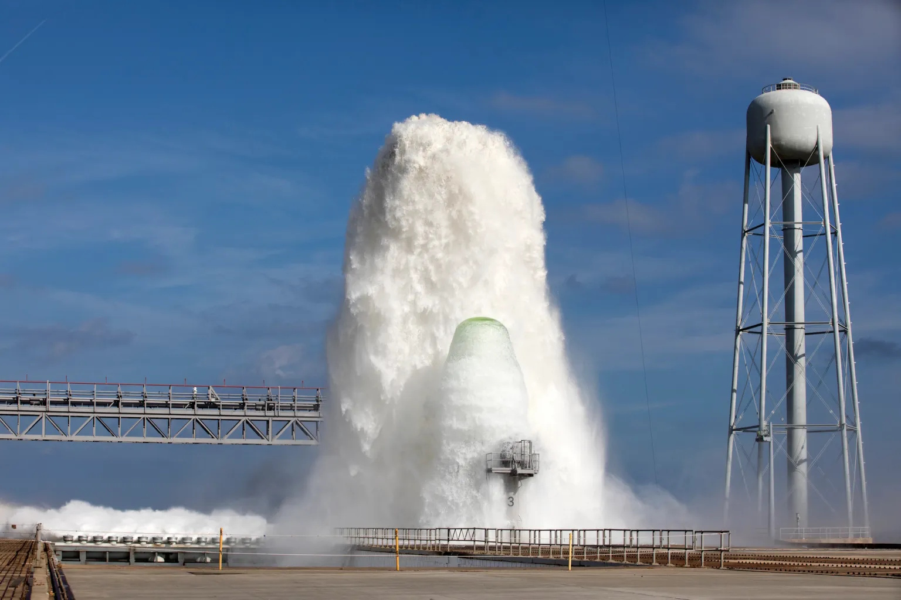
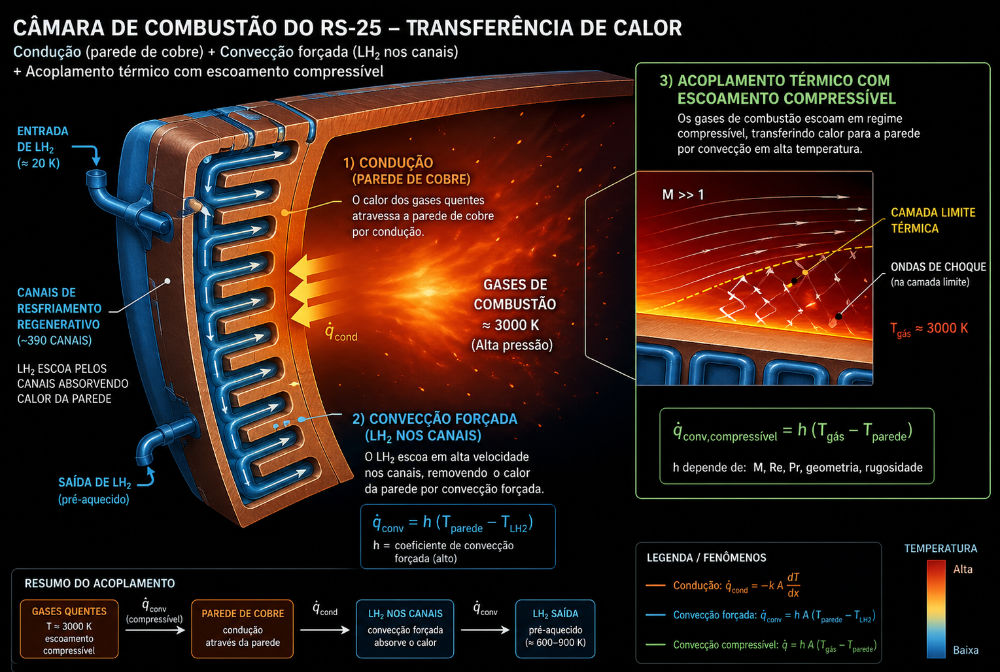
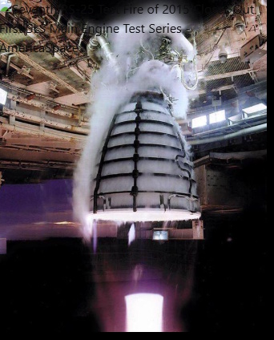
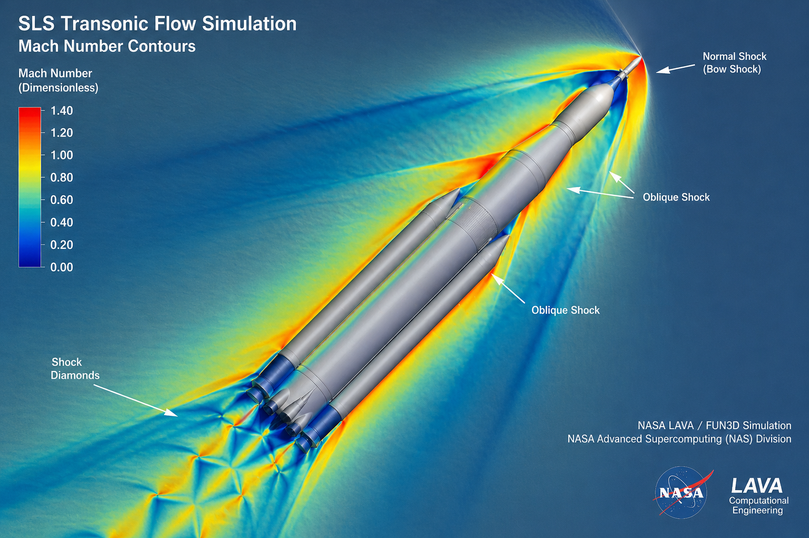
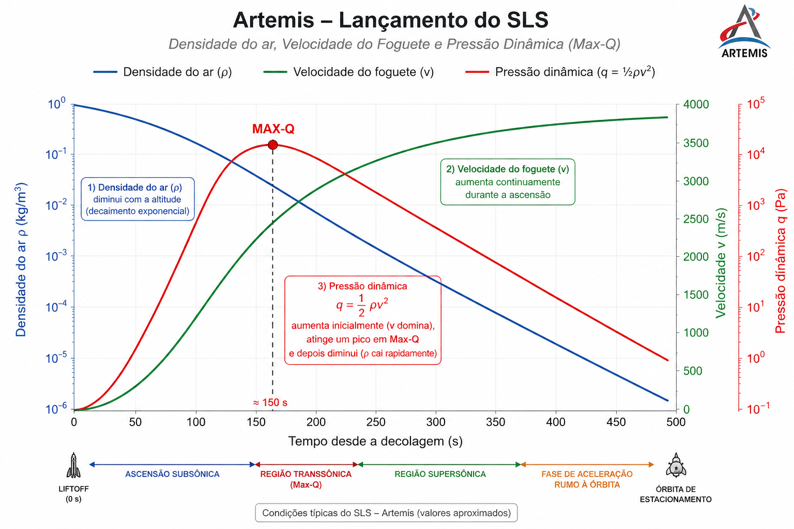
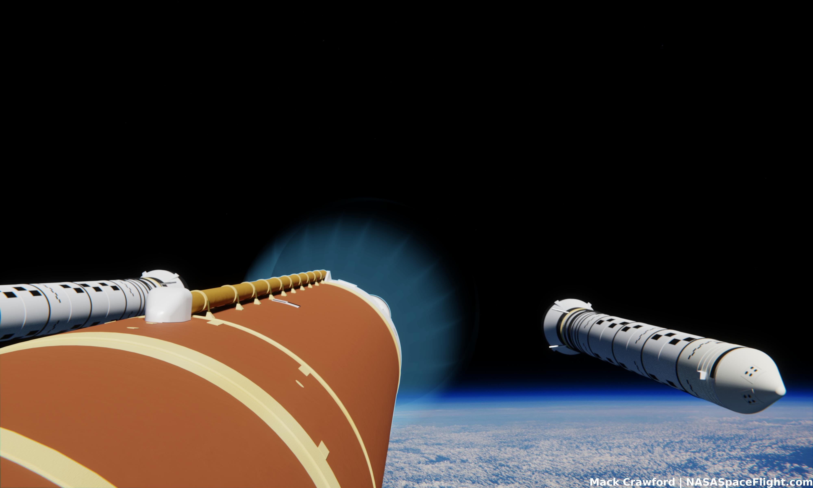
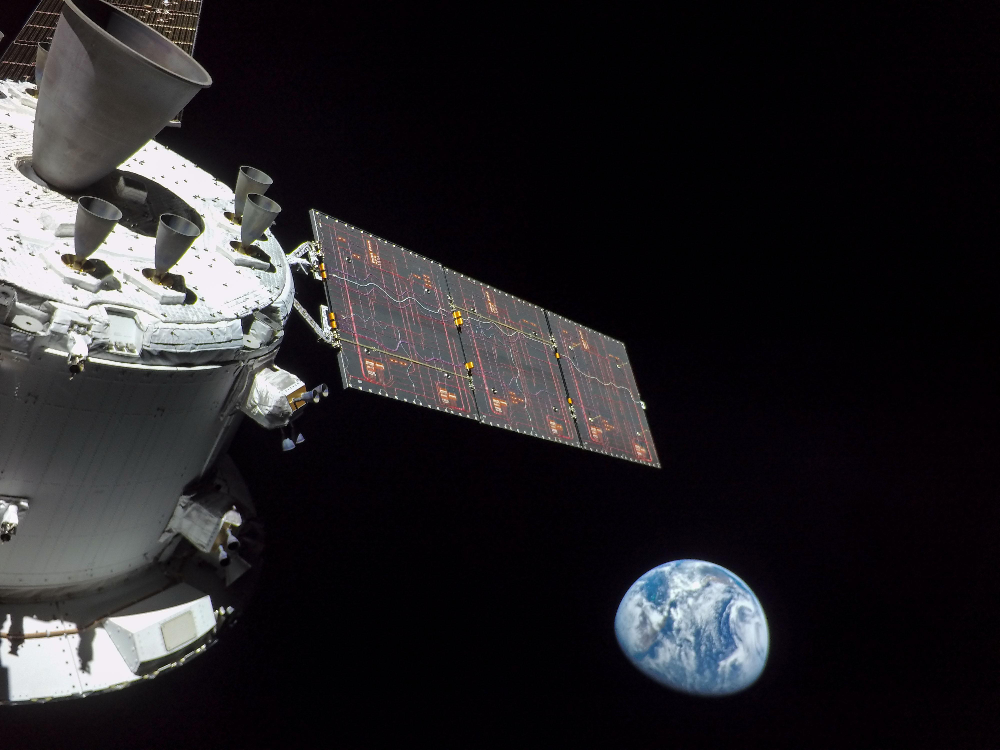

Lançamento Artemis / SLS — Da Plataforma ao Escape da Terra
Mecânica dos fluidos e transferência de calor no lançamento Artemis: do instante em que a chama toca a plataforma até o momento em que a gravidade terrestre perde sua batalha.
Todo lançamento de foguete é, na sua essência, um problema de mecânica dos fluidos e transferência de calor. Desde o milissegundo em que os propelentes se encontram na câmara de combustão até o instante em que o veículo escapa da atmosfera, são as equações de Navier-Stokes, a lei de Fourier e o segundo princípio da termodinâmica que determinam o sucesso ou o fracasso da missão.
O SLS (Space Launch System), com 8,8 milhões de libras-força de empuxo total — 15% acima do Saturn V da Apollo —, é o foguete mais poderoso já construído para missão tripulada. Seu coração são quatro motores RS-2516, derivados do Space Shuttle Main Engine, e dois enormes boosters sólidos laterais. Juntos, enfrentam seis fases distintas de fenômenos fluido-termodinâmicos entre a plataforma e o espaço.
Seis segundos e seis décimos antes do lançamento, os quatro RS-25 acendem em sequência rápida.1 Hidrogênio e oxigênio líquidos, bombeados a mais de 480 bar, encontram-se na câmara de combustão e produzem uma chama com temperatura de câmara superior a 3.300 °C.68 Os gases de exaustão — majoritariamente vapor d'água no caso do ciclo LH₂/LOX — atingem velocidades supersônicas Mach 5–7 imediatamente após a garganta do bocal.
No instante da ignição, os gases supersônicos encontram ar estático a pressão atmosférica. A expansão adiabática súbita gera uma onda de sobrepressão de ignição (IOP) — uma frente de choque que se propaga radialmente a partir dos bocais. Sem mitigação, essa onda se reflete nas estruturas da plataforma e retorna ao veículo com energia suficiente para causar falha estrutural, como ocorreu com a carga útil do STS-1 em 1981.
A solução é puramente fluido-dinâmica: interpor uma massa de água entre a onda e as superfícies vulneráveis antes que ela se forme.3
O sistema do Pad 39B libera 1,5 a 1,7 milhão de litros de água alimentados exclusivamente por pressão hidrostática (gravidade), sem bombas.32 A taxa de pico ultrapassa 4 milhões de litros por minuto3 — suficiente para esvaziar duas piscinas olímpicas em 60 segundos.
A água flui pela flame trench de 140 m e pelos rainbirds da plataforma móvel, criando uma cortina densa que absorve energia acústica por evaporação forçada (transferência de calor latente).
A água realiza três funções termodinâmicas simultâneas ao contato com os gases de exaustão:
A água absorve ~2.260 kJ/kg ao evaporar — a maior parte da energia acústica é convertida em trabalho de vaporização, reduzindo drasticamente a amplitude das ondas de pressão.
O fluxo turbulento de água em alta velocidade arrasta calor da garganta e da chama por convecção intensa, protegendo as estruturas metálicas abaixo do bocal.
As gotículas de água na névoa dissipam a energia das ondas de pressão por dispersão e absorção viscosa, reduzindo a amplitude acústica em até 20 dB.

O sistema de dilúvio opera inteiramente por pressão de gravidade — sem bombas. A torre d'água adjacente fica elevada a altura suficiente para gerar pressão hidrostática capaz de mover 1,7 milhão de litros em segundos. É mecânica dos fluidos aplicada na forma mais pura: ΔP = ρgh.
No momento em que o empuxo supera o peso total do veículo carregado — cerca de 2,7 milhões de kg — o SLS começa a ascender. O escoamento nos bocais dos RS-25 e dos boosters sólidos é o fenômeno mais violento da fase inicial: gases a 3.300 °C deixam os bocais a velocidades entre Mach 5 e 7, gerando as características shock diamonds (diamantes de choque) visíveis na pluma.
Quando o gás de exaustão deixa o bocal a uma pressão diferente da pressão atmosférica, forma-se uma cadeia de ondas de choque oblíquas e leques de expansão de Prandtl-Meyer.5 O padrão resulta do ciclo:
Choque oblíquo comprime o jato → pressão sobe → expansão de Prandtl-Meyer expande → pressão cai → novo choque. Esse ciclo se repete ao longo da pluma, formando os anéis luminosos visíveis — cada ponto brilhante é uma região de alta temperatura e pressão onde há ignição de propelente residual.
O SLS precisa gerar não apenas velocidade orbital (~7,8 km/s para LEO), mas compensar as perdas por gravidade e arrasto atmosférico ao longo de toda a ascensão.
A temperatura na câmara de combustão do RS-25 — acima de 3.600 K — supera o ponto de fusão de praticamente todos os metais conhecidos. O motor não derrete por uma obra-prima de engenharia térmica:89
O LH₂ criogênico (–253 °C) circula por ≈390 canais axiais maquinados na parede de liga de cobre da câmara antes de ser injetado.68 Absorve calor por convecção forçada intensa, mantendo a parede abaixo de 1.650 K. O hidrogênio então entra na câmara já pré-aquecido — recuperando energia que seria perdida.
Ao longo do bocal, LH₂ é injetado tangencialmente às paredes, formando uma camada-limite protetora de gás frio entre os gases quentes de combustão e a parede metálica. Reduz o fluxo de calor convectivo na região do bocal.
A extensão do bocal em nióbio C-103 opera acima de 1.650 °C e brilha visivelmente durante o voo — dissocia calor por emissão de corpo negro (radiação). Sem fluido ativo; apenas o material de alta emissividade irradia calor para o espaço.


O regime transônico — entre Mach 0,8 e 1,4 — é o momento mais instável da ascensão. As equações lineares da aerodinâmica clássica colapsam: a compressibilidade do ar se torna dominante410 e a distribuição de pressão sobre o veículo muda drasticamente ao cruzar a velocidade do som.
Nesse regime, surgem ondas de choque normais e oblíquas em diferentes pontos da estrutura simultaneamente. A zona de choque oscila — fenômeno chamado shock buffeting4 — criando cargas vibratórias não estacionárias que podem excitar frequências naturais da estrutura e causar fadiga ou falha.
No transônico, o arrasto total aumenta drasticamente pela soma de dois componentes: o arrasto viscoso da camada-limite turbulenta e o arrasto de onda gerado pela dissipação de energia nas ondas de choque. O coeficiente de arrasto (C_D) pode triplicar ao cruzar Mach 1.
Para o SLS, os engenheiros moldam a ogiva e o perfil do veículo para minimizar a área de captura de choque e retardar a formação de ondas normais — princípio chamado de área ruling.
Ao cruzar a barreira do som, o ar em frente ao nariz do foguete não consegue mais "escapar" — é comprimido adiabaticamente. Na região de estagnação (ponto de parada), a temperatura do ar pode superar 500 K mesmo em altitude de 10 km.
Perto da ponta do foguete (estagnação), o ar é comprimido sem troca de calor com o exterior — toda a energia cinética converte-se em calor. É a principal fonte de aquecimento em pontos de parada.
Ao longo das paredes do foguete, o gradiente de velocidade da camada-limite turbulenta gera tensões cisalhantes viscosas. A energia é dissipada como calor, aquecendo a parede por convecção.
O cruzamento de ondas de choque oblíquas com a camada-limite (interação choque-camada-limite, SWBLI) cria picos locais de pressão e temperatura que podem exceder a capacidade do material estrutural.

Para atravessar o transônico com segurança, os RS-25 são throttled down para ~65–72% da potência nominal ≈50–60 s após o lançamento. Os boosters sólidos têm seu grão de propelente projetado para reduzir automaticamente o empuxo em ~1/3 por volta de T+50 s. Juntos, limitam a velocidade — e portanto a pressão dinâmica — no pico de estresse aerodinâmico.
Max-Q47 — maximum dynamic pressure — é o instante em que a pressão dinâmica exercida pelo ar sobre o foguete atinge seu valor máximo durante toda a ascensão. É o ponto de maior tensão estrutural e aerodinâmica, o momento em que a nave está mais vulnerável a uma falha catastrófica.
A força de arrasto aerodinâmico é diretamente proporcional à pressão dinâmica: F_drag = C_D · A · q. A Max-Q, essa força atinge valores que podem superar a capacidade estrutural do foguete se ele desviar minimamente da direção do vento.
O SLS é uma estrutura extremamente esbelta — como um lápis de 100 metros. Qualquer ângulo de ataque em relação ao escoamento gera momentos fletores laterais enormes. Por isso, a Max-Q é a fase de maior risco de perda do veículo por instabilidade.
A variação: para a missão original Space Shuttle, Max-Q ocorria com q ≈ 32 kPa (4,7 psi) a ~11 km de altitude.710
A Max-Q, o fluxo de calor aerodinâmico sobre a pele do foguete é máximo. Na região de estagnação do nariz, a temperatura do ar comprimido pode atingir 700–900 K. A taxa de transferência de calor por convecção é descrita pela relação de Stanton:

A partir de Max-Q, o foguete inicia gradualmente o gravity turn — uma curva suave guiada pela gravidade que vai inclinando a trajetória do vertical para o horizontal. Os motores RS-25 e os boosters são girados em seus suportes gimbal (±10,5°) para controlar precisamente esse arco, mantendo o ângulo de ataque sempre próximo de zero — minimizando os momentos de flexão.
Aos 127 segundos de voo, a altitude é de aproximadamente 45 km. A densidade do ar caiu para menos de 1% do valor ao nível do mar.1112 Os dois boosters sólidos laterais, que consumiram seus 1,1 milhão de libras de propelente cada em pouco mais de dois minutos, são ejetados do estágio central com cargas explosivas.
Em 45 km, a pressão dinâmica é de apenas ~1% do valor em Max-Q. As ondas de choque que dominavam o regime transônico e supersônico baixo enfraquecem drasticamente — os gradientes de pressão e temperatura associados desaparecem. O ar começa a se comportar de forma rarefeita: o livre caminho médio das moléculas aumenta e o escoamento contínuo (descrito por Navier-Stokes) cede lugar gradualmente ao escoamento molecular.12
A separação dos boosters cria um problema fluido-dinâmico delicado: os dois objetos maciços (cada um com ~90 toneladas de massa vazia) precisam se afastar do estágio central sem colidir. Na altitude de 45 km, o ar rarefeito oferece pouquíssima resistência — a separação depende quase inteiramente dos motores de afastamento (BSM — Booster Separation Motors), que empurram cada booster para longe a cerca de 4 m/s.
A partir de ~30 km de altitude, o aquecimento aerodinâmico da superfície do foguete começa a diminuir significativamente. Embora a velocidade continue crescendo, a densidade do ar — fator multiplicativo no fluxo de calor convectivo — cai tão rapidamente que o produto ρ·v³ (proporcional ao fluxo de calor) reduz. A transferência de calor da camada-limite para a parede da fuselagem enfraquece.
Com a separação dos boosters, o fairing da carga útil (ogiva protetora) também pode ser ejetado próximo a essa altitude, pois o aquecimento aerodinâmico caiu a níveis seguros para a carga — geralmente abaixo de 1135 W/m².211

Aproximadamente 8 minutos e 30 segundos após o lançamento, os quatro RS-25 se desligam — evento chamado de MECO (Main Engine Cut-Off).112 O veículo está em órbita de estacionamento a ~175 km de altitude, viajando a mais de 7,8 km/s. A pressão dinâmica é virtualmente zero. A mecânica dos fluidos clássica, baseada em escoamento contínuo, encerrou seu papel.
A velocidade de escape da Terra é derivada da conservação de energia mecânica:
No vácuo, condução e convecção são impossíveis — não há fluido para transportar calor. A radiação é o único mecanismo de troca térmica. O SLS e a Orion enfrentam dois extremos:
No lado iluminado pelo Sol: radiação solar de ~1.361 W/m² (constante solar). No lado sombra: o veículo dissipa calor interno por emissão infravermelha. O gerenciamento térmico orbital é feito por superfícies com emissividade e absortividade controladas — revestimentos, MLI (Multi-Layer Insulation) e radiadores.
ε = emissividade da superfície (0 a 1) | σ = 5,67 × 10⁻⁸ W/m²·K⁴ | T = temperatura absoluta [K]
No vácuo orbital, o veículo emite calor apenas por radiação. O nariz da Orion pode atingir temperaturas extremas tanto por absorção solar quanto durante a reentrada — a solução é o escudo térmico de Avcoat, que absorve e dissipa calor por ablação controlada (pirolise do material, que remove calor por fase gasosa).

T+510 s: os RS-25 desligam. O estágio central separa-se. A Orion e o ICPS continuam em órbita circular a ~175 km.
O motor RL10 do ICPS queima por ~18 min adicionando ~3,2 km/s — suficiente para a Orion escapar da influência predominante da Terra e iniciar a trajetória para a Lua.
Na volta, a Orion reenconta o fluido denso a 40.000 km/h. O escudo de Avcoat de 16,5 pés de diâmetro absorve o calor de reentrada por ablação — queima controlada que remove calor da nave.
MLI (Multi-Layer Insulation), revestimentos de alta emissividade e radiadores controlam a temperatura interna durante o voo cislunar — em um ambiente que vai de –150 °C (sombra) a +120 °C (Sol).
O lançamento do Artemis SLS é uma obra de engenharia fluido-termodinâmica de complexidade sem paralelo. Cada fase exige o domínio de um regime completamente diferente da mecânica dos fluidos e da transferência de calor — e esses regimes mudam em questão de segundos.
Na plataforma, a solução de fluido é a mais simples: gravidade empurrando água contra chamas. Na câmara do RS-25, é o extremo oposto: hidrogênio criogênico circulando por 390 microcanais para conter um plasma de 3.600 K.
No transônico, as equações lineares falham e a compressibilidade domina — o maior risco estrutural da missão. Em Max-Q, a pressão dinâmica cria forças que poderiam dobrar ao meio um foguete de 100 metros se a trajetória desviasse apenas alguns graus.
Na estratosfera, o fluido rareia até se tornar quase irreal — e o veículo precisa de motores de separação onde antes havia arrasto atmosférico. No espaço, todo o aparato fluido-dinâmico se cala: resta apenas a radiação, a gravidade, e a velocidade acumulada.
Em pouco mais de 8 minutos, o SLS passa pelo subsônico, transônico, supersônico, hipersônico e escoamento molecular rarefeito — cada regime com suas próprias equações, seus próprios perigos e suas próprias soluções.